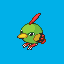

Basiswerte
| KP | 40 | |
|---|---|---|
| Angriff | 50 | |
| Verteidigung | 45 | |
| Spezial-Angriff | 70 | |
| Spezial-Verteidigung | 45 | |
| Initiative | 70 | |
| Summe | 320 |

Pokédex #177 · Species #177 · POKEMON_NATU
Gewöhnlich sucht es am Boden nach Futter, aber manchmal springt es auch auf Äste, um dort zu suchen.
| KP | 40 | |
|---|---|---|
| Angriff | 50 | |
| Verteidigung | 45 | |
| Spezial-Angriff | 70 | |
| Spezial-Verteidigung | 45 | |
| Initiative | 70 | |
| Summe | 320 |
| Level | Attacke |
|---|---|
| 1 | Silberblick |
| 1 | Schnabel |
| 6 | Nachtnebel |
| 9 | Teleport |
| 23 | Konfustrahl |
| 28 | Wunschtraum |
| 30 | Seher |
| 33 | Psychokinese |
| TM/VM | Attacke |
|---|---|
| TM04 | Gedankengut |
| TM06 | Toxin |
| TM10 | Kraftreserve |
| TM11 | Sonnentag |
| TM16 | Lichtschild |
| TM17 | Schutzschild |
| TM18 | Regentanz |
| TM19 | Gigasauger |
| TM21 | Frustration |
| TM22 | Solarstrahl |
| TM27 | Rueckkehr |
| TM29 | Psychokinese |
| TM30 | Spukball |
| TM32 | Doppelteam |
| TM33 | Reflektor |
| TM40 | Aero Ass |
| TM41 | Zauberschein |
| TM42 | Fassade |
| TM43 | Geheimpower |
| TM44 | Erholung |
| TM45 | Anziehung |
| TM46 | Raub |
| TM47 | Stahlfluegel |
| TM61 | Delegator |
| TM62 | Donnerwelle |
| TM63 | Schlafrede |
| TM64 | Angeberei |
| TM66 | Ampelleuchte |
| TM69 | Zen Kopfstoss |
| TM70 | Trickbetrug |
| TM73 | Fluch |
| TM74 | Ausdauer |
| TM77 | Magiemantel |
| TM82 | Wertewechsel |
| TM88 | Traumfresser |
| VM05 | Blitz |
-